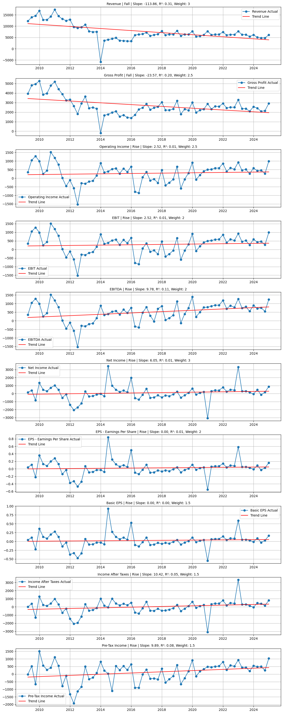

A Data-Driven Case Study Presentation by Feroze Khan M
Start ExploringAnalyzing Nokia's current position through Strengths, Weaknesses, Opportunities & Threats
import pandas as pd
import numpy as np
import matplotlib.pyplot as plt
from sklearn.linear_model import LinearRegression
# Define the essential financial columns
columns_to_use = [
'Dates', 'Revenue', 'Cost Of Goods Sold', 'Gross Profit', 'Research And Development Expenses',
'SG&A Expenses', 'Other Operating Income Or Expenses', 'Operating Expenses',
'Operating Income', 'Total Non-Operating Income/Expense', 'Pre-Tax Income', 'Income Taxes',
'Income After Taxes', 'Other Income', 'Income From Continuous Operations',
'Income From Discontinued Operations', 'Net Income', 'EBITDA', 'EBIT',
'Basic EPS', 'EPS - Earnings Per Share'
]
# Load the data
file_path = "/income_statement.csv"
df = pd.read_csv(file_path)
# Ensure 'Dates' column exists
if 'Dates' not in df.columns:
raise ValueError("The 'Dates' column is missing from the data.")
# Convert 'Dates' to datetime format
df['Dates'] = pd.to_datetime(df['Dates'], format='%d-%m-%Y', errors='coerce')
# Filter and clean the data
df = df[columns_to_use].dropna(thresh=int(len(columns_to_use) * 0.75))
df = df.sort_values("Dates").reset_index(drop=True)
# Check if DataFrame is empty after filtering
if df.empty:
raise ValueError("The DataFrame is empty after filtering. Please check the data and filtering criteria.")
# Convert financial columns to numeric
for col in df.columns:
if col != "Dates":
df[col] = df[col].replace('[\$,B]', '', regex=True).replace(',', '', regex=True)
df[col] = pd.to_numeric(df[col], errors='coerce')
# Define weights for each metric
weights = {
'Revenue': 3, 'Gross Profit': 2.5, 'Operating Income': 2.5, 'EBIT': 2, 'EBITDA': 2,
'Net Income': 3, 'EPS - Earnings Per Share': 2, 'Basic EPS': 1.5,
'Income After Taxes': 1.5, 'Pre-Tax Income': 1.5
}
# Metrics where a decrease is considered positive
reverse_metrics = []
# Initialize analysis
results = {}
weighted_score = 0
fig, axs = plt.subplots(nrows=len(weights), figsize=(12, len(weights) * 3))
if len(weights) == 1:
axs = [axs]
# Perform trend analysis
for i, (col, weight) in enumerate(weights.items()):
if col not in df.columns or df[col].isnull().sum() > 2:
continue
x = np.arange(len(df)).reshape(-1, 1)
y = df[col].values.reshape(-1, 1)
model = LinearRegression().fit(x, y)
slope = model.coef_[0][0]
y_pred = model.predict(x)
r2 = model.score(x, y)
if col in reverse_metrics:
trend = "Fall (good)" if slope < 0 else "Rise (bad)"
score = weight if slope < 0 else -weight
else:
trend = "Rise" if slope > 0 else "Fall"
score = weight if slope > 0 else -weight
weighted_score += score
results[col] = (trend, slope, weight, score, r2)
axs[i].plot(df["Dates"], y, label=f'{col} Actual', marker='o')
axs[i].plot(df["Dates"], y_pred, label='Trend Line', color='red')
axs[i].set_title(f"{col} | {trend} | Slope: {slope:.2f}, R²: {r2:.2f}, Weight: {weight}", fontsize=10)
axs[i].legend()
axs[i].grid(True)
plt.tight_layout()
plt.show()
# Output textual analysis
trend_analysis = "\n📊 Weighted Trend Analysis:\n"
for metric, (trend, slope, weight, score, r2) in results.items():
trend_analysis += f" - {metric}: {trend} (slope: {slope:.2f}, R²: {r2:.2f}, weight: {weight}, score: {score})\n"
verdict = "\n🧠 Final Weighted Verdict:\n"
if weighted_score > 0:
verdict += f"📈 Nokia is showing signs of FINANCIAL RECOVERY (weighted score: {weighted_score:.2f})"
else:
verdict += f"🔻 Nokia is showing signs of FINANCIAL DECLINE (weighted score: {weighted_score:.2f})"
print(trend_analysis)
print(verdict)

📊 Weighted Trend Analysis:
- Revenue: Fall (slope: -113.86, R²: 0.31, weight: 3, score: -3)
- Gross Profit: Fall (slope: -23.57, R²: 0.20, weight: 2.5, score: -2.5)
- Operating Income: Rise (slope: 2.52, R²: 0.01, weight: 2.5, score: 2.5)
- EBIT: Rise (slope: 2.52, R²: 0.01, weight: 2, score: 2)
- EBITDA: Rise (slope: 9.78, R²: 0.11, weight: 2, score: 2)
- Net Income: Rise (slope: 6.05, R²: 0.01, weight: 3, score: 3)
- EPS - Earnings Per Share: Rise (slope: 0.00, R²: 0.01, weight: 2, score: 2)
- Basic EPS: Rise (slope: 0.00, R²: 0.00, weight: 1.5, score: 1.5)
- Income After Taxes: Rise (slope: 10.42, R²: 0.05, weight: 1.5, score: 1.5)
- Pre-Tax Income: Rise (slope: 9.89, R²: 0.08, weight: 1.5, score: 1.5)
🧠 Final Weighted Verdict:
📈 Nokia is showing signs of FINANCIAL RECOVERY (weighted score: 10.50)